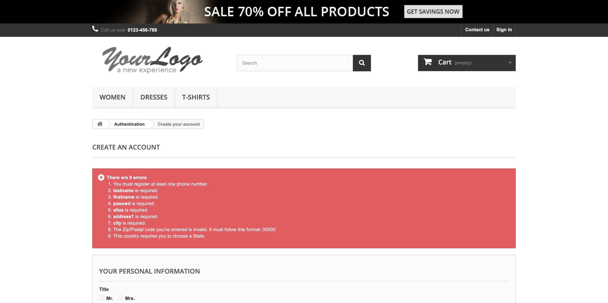
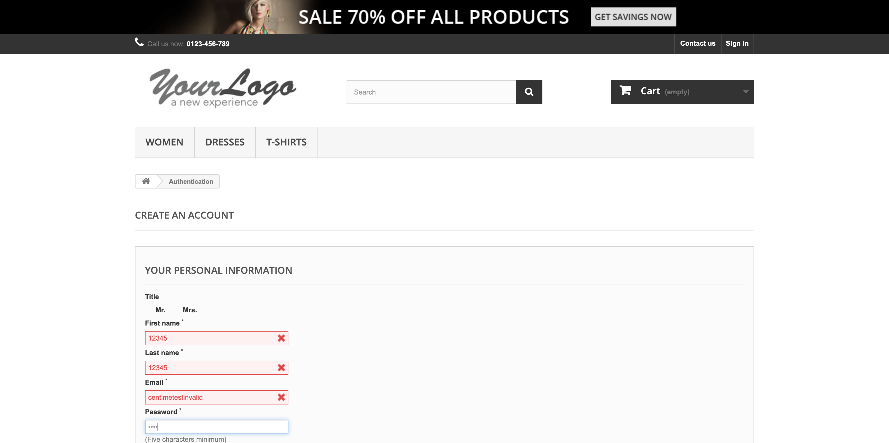
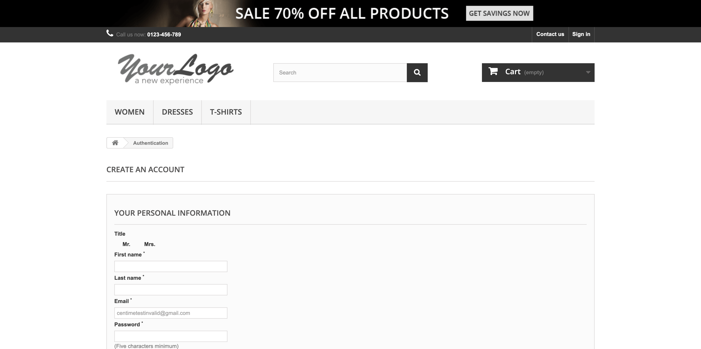

Report generated on 21-Jun-2022 at 15:10:01 by pytest-html v3.1.1
| Packages | {"pluggy": "1.0.0", "py": "1.11.0", "pytest": "7.1.2"} |
| Platform | macOS-10.16-x86_64-i386-64bit |
| Plugins | {"allure-pytest": "2.9.45", "forked": "1.4.0", "html": "3.1.1", "html-reporter": "0.2.9", "metadata": "2.0.1", "xdist": "2.5.0"} |
| Python | 3.9.1 |
14 tests ran in 138.22 seconds.
(Un)check the boxes to filter the results.
11 passed, 0 skipped, 3 failed, 0 errors, 0 expected failures, 0 unexpected passes| Result | Test | Duration | Links |
|---|---|---|---|
| No results found. Try to check the filters | |||
| Failed | tests/test_registration.py::Test_Registration::test_validate_exception_for_mandatory_fields_in_registration | 53.13 | |
|
 [gw5] darwin -- Python 3.9.1 /Users/vsramana/Documents/local-test-scrambler/venv/bin/python [gw5] darwin -- Python 3.9.1 /Users/vsramana/Documents/local-test-scrambler/venv/bin/python[gw5] darwin -- Python 3.9.1 /Users/vsramana/Documents/local-test-scrambler/venv/bin/python self = <tests.test_registration.Test_Registration object at 0x7fa87654a9a0> dataLoad = {'testcases': [{'additionalinfo': 'abcd12345567890xyz', 'address1': '123, abc, valid address', 'address2': 'Star build... ...}, {'emailid': 'centimetest1@gmail.com', 'password': 'centime123', 'testcaseid': 'TC6'}, ...], 'title': 'My Store'} @pytest.mark.registration @pytest.mark.negative_registration def test_validate_exception_for_mandatory_fields_in_registration(self, dataLoad): log = logger home = HomePage(self.driver) signIn = SignUpandInPage(self.driver) actions = Actions(self.driver) data = reusableFunctions.getTestCaseData(dataLoad, "TC4") home.getTitle() reusableFunctions.isTitle(home.getTitle(), "My Store") actions.click(home.getSignInBtn()) log.info("Clicked on Sign In Button") reusableFunctions.isDisplayed(signIn.getAuthenticationLbl(), "Sign In Page") actions.click(signIn.getEmailIDCreate()) actions.sendKeys(signIn.getEmailIDCreate(), data.get("emailid")) actions.click(signIn.getCreateAccountBtn()) reusableFunctions.isDisplayed(signIn.getPersonalInformationLbl(), "Registration Form") signIn.getAliasAddrTxt().clear() actions.click(signIn.getSubmitBtn()) reusableFunctions.isDisplayed(signIn.getErrorDetails(), "Error Details List") reusableFunctions.isDisplayed(signIn.getAtleastOnePhNumberError(), "You must register at least one phone number") reusableFunctions.isDisplayed(signIn.getLastNameRequiredError(), "Last Name is required") reusableFunctions.isDisplayed(signIn.getFirstNameRequiredError(), "First Name is required") reusableFunctions.isDisplayed(signIn.getPasswordRequiredError(), "Password is required") reusableFunctions.isDisplayed(signIn.getAddress1Txt(), "Address 1 is required") reusableFunctions.isDisplayed(signIn.getCityRequiredError(), "City is required") reusableFunctions.isDisplayed(signIn.getStateRequiredError(), "State is Required") > reusableFunctions.isDisplayed(signIn.getPostalCodegeRequiredError(), "Postal Code is Required") E AttributeError: 'SignUpandInPage' object has no attribute 'getPostalCodegeRequiredError' tests/test_registration.py:145: AttributeError[gw5] darwin -- Python 3.9.1 /Users/vsramana/Documents/local-test-scrambler/venv/bin/python -----------------------------Captured stdout setup------------------------------ -----------------------------Captured stderr setup------------------------------ [WDM] - xdist worker is: gw5 [WDM] - ====== WebDriver manager ====== [WDM] - Current google-chrome version is 102.0.5005 [WDM] - Get LATEST chromedriver version for 102.0.5005 google-chrome [WDM] - Driver [/Users/vsramana/.wdm/gw5/drivers/chromedriver/mac64/102.0.5005.61/chromedriver] found in cache -------------------------------Captured log setup------------------------------- INFO WDM:logger.py:16 xdist worker is: gw5 INFO WDM:logger.py:16 ====== WebDriver manager ====== INFO WDM:logger.py:16 Current google-chrome version is 102.0.5005 INFO WDM:logger.py:16 Get LATEST chromedriver version for 102.0.5005 google-chrome INFO WDM:logger.py:16 Driver [/Users/vsramana/.wdm/gw5/drivers/chromedriver/mac64/102.0.5005.61/chromedriver] found in cache | |||
| Failed | tests/test_registration.py::Test_Registration::test_validate_exception_for_invalid_registration | 31.93 | |
|
 [gw3] darwin -- Python 3.9.1 /Users/vsramana/Documents/local-test-scrambler/venv/bin/python [gw3] darwin -- Python 3.9.1 /Users/vsramana/Documents/local-test-scrambler/venv/bin/python[gw3] darwin -- Python 3.9.1 /Users/vsramana/Documents/local-test-scrambler/venv/bin/python self = <tests.test_registration.Test_Registration object at 0x7f8326350700> dataLoad = {'testcases': [{'additionalinfo': 'abcd12345567890xyz', 'address1': '123, abc, valid address', 'address2': 'Star build... ...}, {'emailid': 'centimetest1@gmail.com', 'password': 'centime123', 'testcaseid': 'TC6'}, ...], 'title': 'My Store'} @pytest.mark.registration @pytest.mark.postive_registration def test_validate_exception_for_invalid_registration(self, dataLoad): log = logger home = HomePage(self.driver) signIn = SignUpandInPage(self.driver) actions = Actions(self.driver) data = reusableFunctions.getTestCaseData(dataLoad, "TC5") home.getTitle() reusableFunctions.isTitle(home.getTitle(), "My Store") actions.click(home.getSignInBtn()) log.info("Clicked on Sign In Button") reusableFunctions.isDisplayed(signIn.getAuthenticationLbl(), "Sign In Page") actions.click(signIn.getEmailIDCreate()) actions.sendKeys(signIn.getEmailIDCreate(), data.get("emailid")) actions.click(signIn.getCreateAccountBtn()) reusableFunctions.isDisplayed(signIn.getPersonalInformationLbl(), "Registration Form") actions.sendKeys(signIn.getCustFirstNameTxt(), data.get("firstname")) actions.sendKeys(signIn.getCustLastNameTxt(), data.get("lastname")) actions.clear(signIn.getEmailIdTxt()) actions.sendKeys(signIn.getEmailIdTxt(), data.get("emailinvalid")) actions.sendKeys(signIn.getPasswordTxt(), data.get("password")) > actions.click(signIn.getPostCodeTxt()) tests/test_registration.py:202: _ _ _ _ _ _ _ _ _ _ _ _ _ _ _ _ _ _ _ _ _ _ _ _ _ _ _ _ _ _ _ _ _ _ _ _ _ _ _ _ utilities/Actions.py:11: in click element.click() ../../local-test-scrambler/venv/lib/python3.9/site-packages/selenium/webdriver/remote/webelement.py:89: in click self._execute(Command.CLICK_ELEMENT) ../../local-test-scrambler/venv/lib/python3.9/site-packages/selenium/webdriver/remote/webelement.py:773: in _execute return self._parent.execute(command, params) ../../local-test-scrambler/venv/lib/python3.9/site-packages/selenium/webdriver/remote/webdriver.py:430: in execute self.error_handler.check_response(response) _ _ _ _ _ _ _ _ _ _ _ _ _ _ _ _ _ _ _ _ _ _ _ _ _ _ _ _ _ _ _ _ _ _ _ _ _ _ _ _ self = <selenium.webdriver.remote.errorhandler.ErrorHandler object at 0x7f83263b5910> response = {'status': 400, 'value': '{"value":{"error":"element not interactable","message":"element not interactable\\n (Sessio...ff8176d64e1 _pthread_start + 125\\n21 libsystem_pthread.dylib 0x00007ff8176d1f6b thread_start + 15\\n"}}'} def check_response(self, response: Dict[str, Any]) -> None: """ Checks that a JSON response from the WebDriver does not have an error. :Args: - response - The JSON response from the WebDriver server as a dictionary object. :Raises: If the response contains an error message. """ status = response.get('status', None) if not status or status == ErrorCode.SUCCESS: return value = None message = response.get("message", "") screen: str = response.get("screen", "") stacktrace = None if isinstance(status, int): value_json = response.get('value', None) if value_json and isinstance(value_json, str): import json try: value = json.loads(value_json) if len(value.keys()) == 1: value = value['value'] status = value.get('error', None) if not status: status = value.get("status", ErrorCode.UNKNOWN_ERROR) message = value.get("value") or value.get("message") if not isinstance(message, str): value = message message = message.get('message') else: message = value.get('message', None) except ValueError: pass exception_class: Type[WebDriverException] if status in ErrorCode.NO_SUCH_ELEMENT: exception_class = NoSuchElementException elif status in ErrorCode.NO_SUCH_FRAME: exception_class = NoSuchFrameException elif status in ErrorCode.NO_SUCH_SHADOW_ROOT: exception_class = NoSuchShadowRootException elif status in ErrorCode.NO_SUCH_WINDOW: exception_class = NoSuchWindowException elif status in ErrorCode.STALE_ELEMENT_REFERENCE: exception_class = StaleElementReferenceException elif status in ErrorCode.ELEMENT_NOT_VISIBLE: exception_class = ElementNotVisibleException elif status in ErrorCode.INVALID_ELEMENT_STATE: exception_class = InvalidElementStateException elif status in ErrorCode.INVALID_SELECTOR \ or status in ErrorCode.INVALID_XPATH_SELECTOR \ or status in ErrorCode.INVALID_XPATH_SELECTOR_RETURN_TYPER: exception_class = InvalidSelectorException elif status in ErrorCode.ELEMENT_IS_NOT_SELECTABLE: exception_class = ElementNotSelectableException elif status in ErrorCode.ELEMENT_NOT_INTERACTABLE: exception_class = ElementNotInteractableException elif status in ErrorCode.INVALID_COOKIE_DOMAIN: exception_class = InvalidCookieDomainException elif status in ErrorCode.UNABLE_TO_SET_COOKIE: exception_class = UnableToSetCookieException elif status in ErrorCode.TIMEOUT: exception_class = TimeoutException elif status in ErrorCode.SCRIPT_TIMEOUT: exception_class = TimeoutException elif status in ErrorCode.UNKNOWN_ERROR: exception_class = WebDriverException elif status in ErrorCode.UNEXPECTED_ALERT_OPEN: exception_class = UnexpectedAlertPresentException elif status in ErrorCode.NO_ALERT_OPEN: exception_class = NoAlertPresentException elif status in ErrorCode.IME_NOT_AVAILABLE: exception_class = ImeNotAvailableException elif status in ErrorCode.IME_ENGINE_ACTIVATION_FAILED: exception_class = ImeActivationFailedException elif status in ErrorCode.MOVE_TARGET_OUT_OF_BOUNDS: exception_class = MoveTargetOutOfBoundsException elif status in ErrorCode.JAVASCRIPT_ERROR: exception_class = JavascriptException elif status in ErrorCode.SESSION_NOT_CREATED: exception_class = SessionNotCreatedException elif status in ErrorCode.INVALID_ARGUMENT: exception_class = InvalidArgumentException elif status in ErrorCode.NO_SUCH_COOKIE: exception_class = NoSuchCookieException elif status in ErrorCode.UNABLE_TO_CAPTURE_SCREEN: exception_class = ScreenshotException elif status in ErrorCode.ELEMENT_CLICK_INTERCEPTED: exception_class = ElementClickInterceptedException elif status in ErrorCode.INSECURE_CERTIFICATE: exception_class = InsecureCertificateException elif status in ErrorCode.INVALID_COORDINATES: exception_class = InvalidCoordinatesException elif status in ErrorCode.INVALID_SESSION_ID: exception_class = InvalidSessionIdException elif status in ErrorCode.UNKNOWN_METHOD: exception_class = UnknownMethodException else: exception_class = WebDriverException if not value: value = response['value'] if isinstance(value, str): raise exception_class(value) if message == "" and 'message' in value: message = value['message'] screen = None # type: ignore[assignment] if 'screen' in value: screen = value['screen'] stacktrace = None st_value = value.get('stackTrace') or value.get('stacktrace') if st_value: if isinstance(st_value, str): stacktrace = st_value.split('\n') else: stacktrace = [] try: for frame in st_value: line = self._value_or_default(frame, 'lineNumber', '') file = self._value_or_default(frame, 'fileName', '<anonymous>') if line: file = "%s:%s" % (file, line) meth = self._value_or_default(frame, 'methodName', '<anonymous>') if 'className' in frame: meth = "%s.%s" % (frame['className'], meth) msg = " at %s (%s)" msg = msg % (meth, file) stacktrace.append(msg) except TypeError: pass if exception_class == UnexpectedAlertPresentException: alert_text = None if 'data' in value: alert_text = value['data'].get('text') elif 'alert' in value: alert_text = value['alert'].get('text') raise exception_class(message, screen, stacktrace, alert_text) # type: ignore[call-arg] # mypy is not smart enough here > raise exception_class(message, screen, stacktrace) E selenium.common.exceptions.ElementNotInteractableException: Message: element not interactable E (Session info: chrome=102.0.5005.115) E Stacktrace: E 0 chromedriver 0x000000010d1d0d19 chromedriver + 5197081 E 1 chromedriver 0x000000010d15eb23 chromedriver + 4729635 E 2 chromedriver 0x000000010cd3c16f chromedriver + 393583 E 3 chromedriver 0x000000010cd72477 chromedriver + 615543 E 4 chromedriver 0x000000010cd66689 chromedriver + 566921 E 5 chromedriver 0x000000010cd8e802 chromedriver + 731138 E 6 chromedriver 0x000000010cd65f45 chromedriver + 565061 E 7 chromedriver 0x000000010cd8e90e chromedriver + 731406 E 8 chromedriver 0x000000010cda12a1 chromedriver + 807585 E 9 chromedriver 0x000000010cd8e6f3 chromedriver + 730867 E 10 chromedriver 0x000000010cd64a49 chromedriver + 559689 E 11 chromedriver 0x000000010cd65a75 chromedriver + 563829 E 12 chromedriver 0x000000010d1a2bdd chromedriver + 5008349 E 13 chromedriver 0x000000010d1a7b64 chromedriver + 5028708 E 14 chromedriver 0x000000010d1acbcf chromedriver + 5049295 E 15 chromedriver 0x000000010d1a87ca chromedriver + 5031882 E 16 chromedriver 0x000000010d18259f chromedriver + 4875679 E 17 chromedriver 0x000000010d1c2388 chromedriver + 5137288 E 18 chromedriver 0x000000010d1c250f chromedriver + 5137679 E 19 chromedriver 0x000000010d1d8085 chromedriver + 5226629 E 20 libsystem_pthread.dylib 0x00007ff8176d64e1 _pthread_start + 125 E 21 libsystem_pthread.dylib 0x00007ff8176d1f6b thread_start + 15 ../../local-test-scrambler/venv/lib/python3.9/site-packages/selenium/webdriver/remote/errorhandler.py:247: ElementNotInteractableException[gw3] darwin -- Python 3.9.1 /Users/vsramana/Documents/local-test-scrambler/venv/bin/python -----------------------------Captured stdout setup------------------------------ -----------------------------Captured stderr setup------------------------------ [WDM] - xdist worker is: gw3 [WDM] - ====== WebDriver manager ====== [WDM] - Current google-chrome version is 102.0.5005 [WDM] - Get LATEST chromedriver version for 102.0.5005 google-chrome [WDM] - Driver [/Users/vsramana/.wdm/gw3/drivers/chromedriver/mac64/102.0.5005.61/chromedriver] found in cache -------------------------------Captured log setup------------------------------- INFO WDM:logger.py:16 xdist worker is: gw3 INFO WDM:logger.py:16 ====== WebDriver manager ====== INFO WDM:logger.py:16 Current google-chrome version is 102.0.5005 INFO WDM:logger.py:16 Get LATEST chromedriver version for 102.0.5005 google-chrome INFO WDM:logger.py:16 Driver [/Users/vsramana/.wdm/gw3/drivers/chromedriver/mac64/102.0.5005.61/chromedriver] found in cache | |||
| Failed | tests/test_registration.py::Test_Registration::test_validate_exception_for_country_registration | 40.03 | |
|
 [gw5] darwin -- Python 3.9.1 /Users/vsramana/Documents/local-test-scrambler/venv/bin/python [gw5] darwin -- Python 3.9.1 /Users/vsramana/Documents/local-test-scrambler/venv/bin/python[gw5] darwin -- Python 3.9.1 /Users/vsramana/Documents/local-test-scrambler/venv/bin/python self = <tests.test_registration.Test_Registration object at 0x7fa87654ac40> dataLoad = {'testcases': [{'additionalinfo': 'abcd12345567890xyz', 'address1': '123, abc, valid address', 'address2': 'Star build... ...}, {'emailid': 'centimetest1@gmail.com', 'password': 'centime123', 'testcaseid': 'TC6'}, ...], 'title': 'My Store'} @pytest.mark.registration @pytest.mark.postive_registration def test_validate_exception_for_country_registration(self, dataLoad): log = logger home = HomePage(self.driver) signIn = SignUpandInPage(self.driver) actions = Actions(self.driver) data = reusableFunctions.getTestCaseData(dataLoad, "TC4") home.getTitle() reusableFunctions.isTitle(home.getTitle(), "My Store") actions.click(home.getSignInBtn()) log.info("Clicked on Sign In Button") reusableFunctions.isDisplayed(signIn.getAuthenticationLbl(), "Sign In Page") actions.click(signIn.getEmailIDCreate()) actions.sendKeys(signIn.getEmailIDCreate(), data.get("emailid")) actions.click(signIn.getCreateAccountBtn()) > reusableFunctions.isDisplayed(signIn.getPersonalInformationLbl(), "Registration Form") tests/test_registration.py:168: _ _ _ _ _ _ _ _ _ _ _ _ _ _ _ _ _ _ _ _ _ _ _ _ _ _ _ _ _ _ _ _ _ _ _ _ _ _ _ _ selector = <selenium.webdriver.remote.webelement.WebElement (session="dd9e967b22828069728c7a521773674a", element="7a708401-7b49-46cc-956b-5b9b306d94cb")>, text = 'Registration Form' def isDisplayed(selector, text): if selector.is_displayed(): logger.info(text + ": Element is Displayed") assert True else: logger.error(text + ": Element is not Displayed") > assert False E AssertionError utilities/ReusableFunctions.py:56: AssertionError[gw5] darwin -- Python 3.9.1 /Users/vsramana/Documents/local-test-scrambler/venv/bin/python -----------------------------Captured stdout setup------------------------------ -----------------------------Captured stderr setup------------------------------ [WDM] - xdist worker is: gw5 [WDM] - ====== WebDriver manager ====== [WDM] - Current google-chrome version is 102.0.5005 [WDM] - Get LATEST chromedriver version for 102.0.5005 google-chrome [WDM] - Driver [/Users/vsramana/.wdm/gw5/drivers/chromedriver/mac64/102.0.5005.61/chromedriver] found in cache -------------------------------Captured log setup------------------------------- INFO WDM:logger.py:16 xdist worker is: gw5 INFO WDM:logger.py:16 ====== WebDriver manager ====== INFO WDM:logger.py:16 Current google-chrome version is 102.0.5005 INFO WDM:logger.py:16 Get LATEST chromedriver version for 102.0.5005 google-chrome INFO WDM:logger.py:16 Driver [/Users/vsramana/.wdm/gw5/drivers/chromedriver/mac64/102.0.5005.61/chromedriver] found in cache | |||
| Passed | tests/test_login.py::Test_Login::test_validate_login | 43.13 | |
|
[gw3] darwin -- Python 3.9.1 /Users/vsramana/Documents/local-test-scrambler/venv/bin/python [gw3] darwin -- Python 3.9.1 /Users/vsramana/Documents/local-test-scrambler/venv/bin/python[gw3] darwin -- Python 3.9.1 /Users/vsramana/Documents/local-test-scrambler/venv/bin/python[gw3] darwin -- Python 3.9.1 /Users/vsramana/Documents/local-test-scrambler/venv/bin/python -----------------------------Captured stdout setup------------------------------ -----------------------------Captured stderr setup------------------------------ [WDM] - xdist worker is: gw3 [WDM] - ====== WebDriver manager ====== [WDM] - Current google-chrome version is 102.0.5005 [WDM] - Get LATEST chromedriver version for 102.0.5005 google-chrome [WDM] - Driver [/Users/vsramana/.wdm/gw3/drivers/chromedriver/mac64/102.0.5005.61/chromedriver] found in cache -------------------------------Captured log setup------------------------------- INFO WDM:logger.py:16 xdist worker is: gw3 INFO WDM:logger.py:16 ====== WebDriver manager ====== INFO WDM:logger.py:16 Current google-chrome version is 102.0.5005 INFO WDM:logger.py:16 Get LATEST chromedriver version for 102.0.5005 google-chrome INFO WDM:logger.py:16 Driver [/Users/vsramana/.wdm/gw3/drivers/chromedriver/mac64/102.0.5005.61/chromedriver] found in cache | |||
| Passed | tests/test_deleteproduct.py::Test_DeleteProduct::test_delete_first_product | 100.17 | |
|
[gw2] darwin -- Python 3.9.1 /Users/vsramana/Documents/local-test-scrambler/venv/bin/python [gw2] darwin -- Python 3.9.1 /Users/vsramana/Documents/local-test-scrambler/venv/bin/python[gw2] darwin -- Python 3.9.1 /Users/vsramana/Documents/local-test-scrambler/venv/bin/python[gw2] darwin -- Python 3.9.1 /Users/vsramana/Documents/local-test-scrambler/venv/bin/python -----------------------------Captured stdout setup------------------------------ -----------------------------Captured stderr setup------------------------------ [WDM] - xdist worker is: gw2 [WDM] - ====== WebDriver manager ====== [WDM] - Current google-chrome version is 102.0.5005 [WDM] - Get LATEST chromedriver version for 102.0.5005 google-chrome [WDM] - Driver [/Users/vsramana/.wdm/gw2/drivers/chromedriver/mac64/102.0.5005.61/chromedriver] found in cache -------------------------------Captured log setup------------------------------- INFO WDM:logger.py:16 xdist worker is: gw2 INFO WDM:logger.py:16 ====== WebDriver manager ====== INFO WDM:logger.py:16 Current google-chrome version is 102.0.5005 INFO WDM:logger.py:16 Get LATEST chromedriver version for 102.0.5005 google-chrome INFO WDM:logger.py:16 Driver [/Users/vsramana/.wdm/gw2/drivers/chromedriver/mac64/102.0.5005.61/chromedriver] found in cache | |||
| Passed | tests/test_addproduct.py::Test_AddProduct::test_add_first_product | 96.06 | |
|
[gw0] darwin -- Python 3.9.1 /Users/vsramana/Documents/local-test-scrambler/venv/bin/python [gw0] darwin -- Python 3.9.1 /Users/vsramana/Documents/local-test-scrambler/venv/bin/python[gw0] darwin -- Python 3.9.1 /Users/vsramana/Documents/local-test-scrambler/venv/bin/python[gw0] darwin -- Python 3.9.1 /Users/vsramana/Documents/local-test-scrambler/venv/bin/python -----------------------------Captured stdout setup------------------------------ -----------------------------Captured stderr setup------------------------------ [WDM] - xdist worker is: gw0 [WDM] - ====== WebDriver manager ====== [WDM] - Current google-chrome version is 102.0.5005 [WDM] - Get LATEST chromedriver version for 102.0.5005 google-chrome [WDM] - Driver [/Users/vsramana/.wdm/gw0/drivers/chromedriver/mac64/102.0.5005.61/chromedriver] found in cache -------------------------------Captured log setup------------------------------- INFO WDM:logger.py:16 xdist worker is: gw0 INFO WDM:logger.py:16 ====== WebDriver manager ====== INFO WDM:logger.py:16 Current google-chrome version is 102.0.5005 INFO WDM:logger.py:16 Get LATEST chromedriver version for 102.0.5005 google-chrome INFO WDM:logger.py:16 Driver [/Users/vsramana/.wdm/gw0/drivers/chromedriver/mac64/102.0.5005.61/chromedriver] found in cache | |||
| Passed | tests/test_addproduct.py::Test_AddProduct::test_add_product_by_name | 100.63 | |
|
[gw1] darwin -- Python 3.9.1 /Users/vsramana/Documents/local-test-scrambler/venv/bin/python [gw1] darwin -- Python 3.9.1 /Users/vsramana/Documents/local-test-scrambler/venv/bin/python[gw1] darwin -- Python 3.9.1 /Users/vsramana/Documents/local-test-scrambler/venv/bin/python[gw1] darwin -- Python 3.9.1 /Users/vsramana/Documents/local-test-scrambler/venv/bin/python -----------------------------Captured stdout setup------------------------------ -----------------------------Captured stderr setup------------------------------ [WDM] - xdist worker is: gw1 [WDM] - ====== WebDriver manager ====== [WDM] - Current google-chrome version is 102.0.5005 [WDM] - Get LATEST chromedriver version for 102.0.5005 google-chrome [WDM] - Driver [/Users/vsramana/.wdm/gw1/drivers/chromedriver/mac64/102.0.5005.61/chromedriver] found in cache -------------------------------Captured log setup------------------------------- INFO WDM:logger.py:16 xdist worker is: gw1 INFO WDM:logger.py:16 ====== WebDriver manager ====== INFO WDM:logger.py:16 Current google-chrome version is 102.0.5005 INFO WDM:logger.py:16 Get LATEST chromedriver version for 102.0.5005 google-chrome INFO WDM:logger.py:16 Driver [/Users/vsramana/.wdm/gw1/drivers/chromedriver/mac64/102.0.5005.61/chromedriver] found in cache | |||
| Passed | tests/test_login.py::Test_Login::test_validate_exception_for_missing_password | 38.95 | |
|
[gw5] darwin -- Python 3.9.1 /Users/vsramana/Documents/local-test-scrambler/venv/bin/python [gw5] darwin -- Python 3.9.1 /Users/vsramana/Documents/local-test-scrambler/venv/bin/python[gw5] darwin -- Python 3.9.1 /Users/vsramana/Documents/local-test-scrambler/venv/bin/python[gw5] darwin -- Python 3.9.1 /Users/vsramana/Documents/local-test-scrambler/venv/bin/python -----------------------------Captured stdout setup------------------------------ -----------------------------Captured stderr setup------------------------------ [WDM] - xdist worker is: gw5 [WDM] - ====== WebDriver manager ====== [WDM] - Current google-chrome version is 102.0.5005 [WDM] - Get LATEST chromedriver version for 102.0.5005 google-chrome [WDM] - Driver [/Users/vsramana/.wdm/gw5/drivers/chromedriver/mac64/102.0.5005.61/chromedriver] found in cache -------------------------------Captured log setup------------------------------- INFO WDM:logger.py:16 xdist worker is: gw5 INFO WDM:logger.py:16 ====== WebDriver manager ====== INFO WDM:logger.py:16 Current google-chrome version is 102.0.5005 INFO WDM:logger.py:16 Get LATEST chromedriver version for 102.0.5005 google-chrome INFO WDM:logger.py:16 Driver [/Users/vsramana/.wdm/gw5/drivers/chromedriver/mac64/102.0.5005.61/chromedriver] found in cache | |||
| Passed | tests/test_registration.py::Test_Registration::test_validate_exception_registration_for_existing_emailid | 43.94 | |
|
[gw3] darwin -- Python 3.9.1 /Users/vsramana/Documents/local-test-scrambler/venv/bin/python [gw3] darwin -- Python 3.9.1 /Users/vsramana/Documents/local-test-scrambler/venv/bin/python[gw3] darwin -- Python 3.9.1 /Users/vsramana/Documents/local-test-scrambler/venv/bin/python[gw3] darwin -- Python 3.9.1 /Users/vsramana/Documents/local-test-scrambler/venv/bin/python -----------------------------Captured stdout setup------------------------------ -----------------------------Captured stderr setup------------------------------ [WDM] - xdist worker is: gw3 [WDM] - ====== WebDriver manager ====== [WDM] - Current google-chrome version is 102.0.5005 [WDM] - Get LATEST chromedriver version for 102.0.5005 google-chrome [WDM] - Driver [/Users/vsramana/.wdm/gw3/drivers/chromedriver/mac64/102.0.5005.61/chromedriver] found in cache -------------------------------Captured log setup------------------------------- INFO WDM:logger.py:16 xdist worker is: gw3 INFO WDM:logger.py:16 ====== WebDriver manager ====== INFO WDM:logger.py:16 Current google-chrome version is 102.0.5005 INFO WDM:logger.py:16 Get LATEST chromedriver version for 102.0.5005 google-chrome INFO WDM:logger.py:16 Driver [/Users/vsramana/.wdm/gw3/drivers/chromedriver/mac64/102.0.5005.61/chromedriver] found in cache | |||
| Passed | tests/test_login.py::Test_Login::test_validate_exception_for_missing_emailid | 110.52 | |
|
[gw4] darwin -- Python 3.9.1 /Users/vsramana/Documents/local-test-scrambler/venv/bin/python [gw4] darwin -- Python 3.9.1 /Users/vsramana/Documents/local-test-scrambler/venv/bin/python[gw4] darwin -- Python 3.9.1 /Users/vsramana/Documents/local-test-scrambler/venv/bin/python[gw4] darwin -- Python 3.9.1 /Users/vsramana/Documents/local-test-scrambler/venv/bin/python -----------------------------Captured stdout setup------------------------------ -----------------------------Captured stderr setup------------------------------ [WDM] - xdist worker is: gw4 [WDM] - ====== WebDriver manager ====== [WDM] - Current google-chrome version is 102.0.5005 [WDM] - Get LATEST chromedriver version for 102.0.5005 google-chrome [WDM] - Driver [/Users/vsramana/.wdm/gw4/drivers/chromedriver/mac64/102.0.5005.61/chromedriver] found in cache -------------------------------Captured log setup------------------------------- INFO WDM:logger.py:16 xdist worker is: gw4 INFO WDM:logger.py:16 ====== WebDriver manager ====== INFO WDM:logger.py:16 Current google-chrome version is 102.0.5005 INFO WDM:logger.py:16 Get LATEST chromedriver version for 102.0.5005 google-chrome INFO WDM:logger.py:16 Driver [/Users/vsramana/.wdm/gw4/drivers/chromedriver/mac64/102.0.5005.61/chromedriver] found in cache | |||
| Passed | tests/test_login.py::Test_Login::test_validate_exception_for_invalid_email_login | 35.35 | |
|
[gw0] darwin -- Python 3.9.1 /Users/vsramana/Documents/local-test-scrambler/venv/bin/python [gw0] darwin -- Python 3.9.1 /Users/vsramana/Documents/local-test-scrambler/venv/bin/python[gw0] darwin -- Python 3.9.1 /Users/vsramana/Documents/local-test-scrambler/venv/bin/python[gw0] darwin -- Python 3.9.1 /Users/vsramana/Documents/local-test-scrambler/venv/bin/python -----------------------------Captured stdout setup------------------------------ -----------------------------Captured stderr setup------------------------------ [WDM] - xdist worker is: gw0 [WDM] - ====== WebDriver manager ====== [WDM] - Current google-chrome version is 102.0.5005 [WDM] - Get LATEST chromedriver version for 102.0.5005 google-chrome [WDM] - Driver [/Users/vsramana/.wdm/gw0/drivers/chromedriver/mac64/102.0.5005.61/chromedriver] found in cache -------------------------------Captured log setup------------------------------- INFO WDM:logger.py:16 xdist worker is: gw0 INFO WDM:logger.py:16 ====== WebDriver manager ====== INFO WDM:logger.py:16 Current google-chrome version is 102.0.5005 INFO WDM:logger.py:16 Get LATEST chromedriver version for 102.0.5005 google-chrome INFO WDM:logger.py:16 Driver [/Users/vsramana/.wdm/gw0/drivers/chromedriver/mac64/102.0.5005.61/chromedriver] found in cache | |||
| Passed | tests/test_registration.py::Test_Registration::test_registration | 36.52 | |
|
[gw2] darwin -- Python 3.9.1 /Users/vsramana/Documents/local-test-scrambler/venv/bin/python [gw2] darwin -- Python 3.9.1 /Users/vsramana/Documents/local-test-scrambler/venv/bin/python[gw2] darwin -- Python 3.9.1 /Users/vsramana/Documents/local-test-scrambler/venv/bin/python[gw2] darwin -- Python 3.9.1 /Users/vsramana/Documents/local-test-scrambler/venv/bin/python -----------------------------Captured stdout setup------------------------------ -----------------------------Captured stderr setup------------------------------ [WDM] - xdist worker is: gw2 [WDM] - ====== WebDriver manager ====== [WDM] - Current google-chrome version is 102.0.5005 [WDM] - Get LATEST chromedriver version for 102.0.5005 google-chrome [WDM] - Driver [/Users/vsramana/.wdm/gw2/drivers/chromedriver/mac64/102.0.5005.61/chromedriver] found in cache -------------------------------Captured log setup------------------------------- INFO WDM:logger.py:16 xdist worker is: gw2 INFO WDM:logger.py:16 ====== WebDriver manager ====== INFO WDM:logger.py:16 Current google-chrome version is 102.0.5005 INFO WDM:logger.py:16 Get LATEST chromedriver version for 102.0.5005 google-chrome INFO WDM:logger.py:16 Driver [/Users/vsramana/.wdm/gw2/drivers/chromedriver/mac64/102.0.5005.61/chromedriver] found in cache | |||
| Passed | tests/test_login.py::Test_Login::test_validate_exception_for_invalid_password_login | 35.01 | |
|
[gw1] darwin -- Python 3.9.1 /Users/vsramana/Documents/local-test-scrambler/venv/bin/python [gw1] darwin -- Python 3.9.1 /Users/vsramana/Documents/local-test-scrambler/venv/bin/python[gw1] darwin -- Python 3.9.1 /Users/vsramana/Documents/local-test-scrambler/venv/bin/python[gw1] darwin -- Python 3.9.1 /Users/vsramana/Documents/local-test-scrambler/venv/bin/python -----------------------------Captured stdout setup------------------------------ -----------------------------Captured stderr setup------------------------------ [WDM] - xdist worker is: gw1 [WDM] - ====== WebDriver manager ====== [WDM] - Current google-chrome version is 102.0.5005 [WDM] - Get LATEST chromedriver version for 102.0.5005 google-chrome [WDM] - Driver [/Users/vsramana/.wdm/gw1/drivers/chromedriver/mac64/102.0.5005.61/chromedriver] found in cache -------------------------------Captured log setup------------------------------- INFO WDM:logger.py:16 xdist worker is: gw1 INFO WDM:logger.py:16 ====== WebDriver manager ====== INFO WDM:logger.py:16 Current google-chrome version is 102.0.5005 INFO WDM:logger.py:16 Get LATEST chromedriver version for 102.0.5005 google-chrome INFO WDM:logger.py:16 Driver [/Users/vsramana/.wdm/gw1/drivers/chromedriver/mac64/102.0.5005.61/chromedriver] found in cache -------------------------------Captured log call-------------------------------- INFO test_validate_exception_for_invalid_password_login:test_login.py:167 Title is My Store INFO test_validate_exception_for_invalid_password_login:test_login.py:173 Clicked on Sign In Button INFO test_validate_exception_for_invalid_password_login:test_login.py:176 Sign In Page loaded INFO test_validate_exception_for_invalid_password_login:test_login.py:188 Validation Message displayed for Invalid password:Authentication failed. | |||
| Passed | tests/test_registration.py::Test_Registration::test_validate_exception_registration_for_invalid_emailid | 25.14 | |
|
[gw4] darwin -- Python 3.9.1 /Users/vsramana/Documents/local-test-scrambler/venv/bin/python [gw4] darwin -- Python 3.9.1 /Users/vsramana/Documents/local-test-scrambler/venv/bin/python[gw4] darwin -- Python 3.9.1 /Users/vsramana/Documents/local-test-scrambler/venv/bin/python[gw4] darwin -- Python 3.9.1 /Users/vsramana/Documents/local-test-scrambler/venv/bin/python -----------------------------Captured stdout setup------------------------------ -----------------------------Captured stderr setup------------------------------ [WDM] - xdist worker is: gw4 [WDM] - ====== WebDriver manager ====== [WDM] - Current google-chrome version is 102.0.5005 [WDM] - Get LATEST chromedriver version for 102.0.5005 google-chrome [WDM] - Driver [/Users/vsramana/.wdm/gw4/drivers/chromedriver/mac64/102.0.5005.61/chromedriver] found in cache -------------------------------Captured log setup------------------------------- INFO WDM:logger.py:16 xdist worker is: gw4 INFO WDM:logger.py:16 ====== WebDriver manager ====== INFO WDM:logger.py:16 Current google-chrome version is 102.0.5005 INFO WDM:logger.py:16 Get LATEST chromedriver version for 102.0.5005 google-chrome INFO WDM:logger.py:16 Driver [/Users/vsramana/.wdm/gw4/drivers/chromedriver/mac64/102.0.5005.61/chromedriver] found in cache | |||